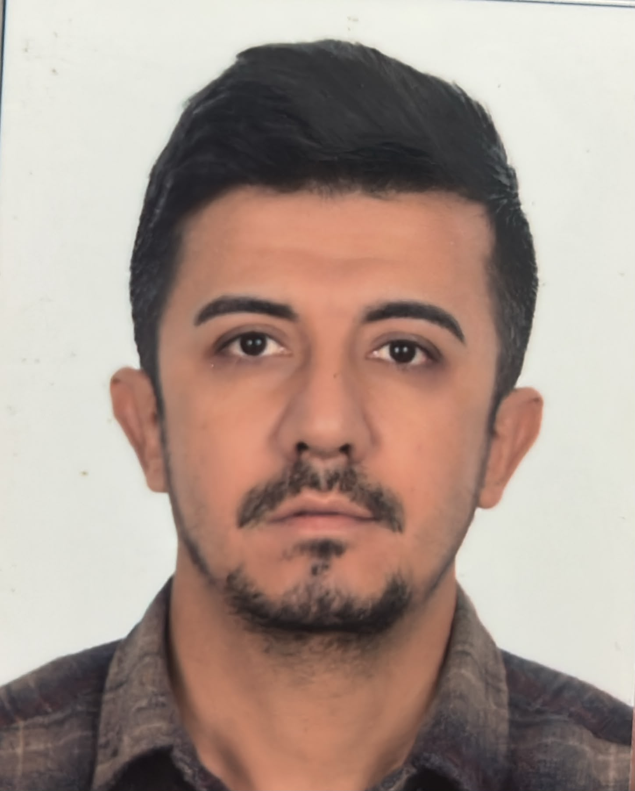
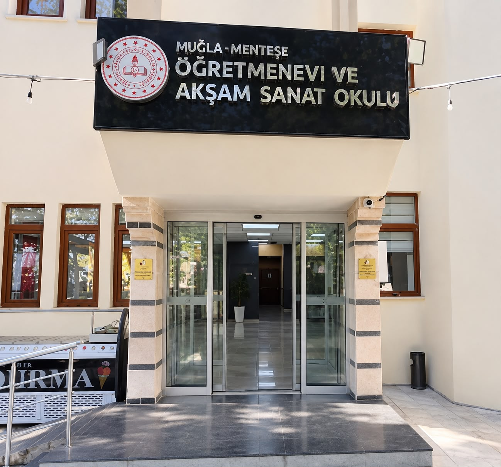

Misafir Memnuniyeti
Kaliteli hizmet anlayışıyla her misafire özenli ve sıcak bir deneyim sunma.
Yiyecek & İçecek İşletmeciliği
Yiyecek ve İçecek İşletmeciliği 3. sınıf öğrencisiyim. Misafir memnuniyeti, kaliteli hizmet anlayışı ve ekip uyumuyla insanlara özenli deneyimler sunmayı hedefliyorum.

“Bu alan yalnızca yiyecek ve içecek hizmetlerinden ibaret değil; misafir memnuniyeti, kaliteli hizmet anlayışı ve insanlara güzel deneyimler sunma sanatıdır.”
Yiyecek ve İçecek İşletmeciliği bölümünde 3. sınıf öğrencisi olarak eğitimime devam etmekteyim. Daha önce İlahiyat Fakültesinden mezun oldum ve aynı zamanda kamu kurumunda memur olarak görev yapmaktayım. Farklı alanlarda edindiğim eğitim ve iş tecrübelerinin, kişisel gelişimime ve mesleki bakış açıma önemli katkılar sağladığına inanıyorum.
İnsan ilişkilerine verdiğim önem, iletişim kurma becerim ve insanlarla bir arada çalışmaktan duyduğum memnuniyet, Yiyecek ve İçecek İşletmeciliği bölümünü tercih etmemde etkili olmuştur. Bu alanın yalnızca yiyecek ve içecek hizmetlerinden ibaret olmadığını; aynı zamanda misafir memnuniyeti, kaliteli hizmet anlayışı, ekip uyumu ve insanlara güzel deneyimler sunmayı kapsadığını düşünüyorum.
Kendimi bu alanda geliştirmeye, yeni bilgiler edinmeye ve mesleki açıdan ilerlemeye oldukça hevesliyim. Takım çalışmasına yatkın, görev bilinci ve sorumluluk duygusu yüksek, verilen işleri özenle yerine getirmeye gayret eden biriyim. İnsanlarla sağlıklı iletişim kurmaya, ekip arkadaşlarımla uyum içerisinde çalışmaya ve karşılaştığım durumlarda çözüm odaklı yaklaşmaya önem veririm.
Eğitimim ve mevcut iş tecrübem doğrultusunda edindiğim bilgi ve becerileri birleştirerek yiyecek ve içecek sektöründe kendime sağlam bir yer edinmeyi hedefliyorum. Öğrenmeye açık yapım, çalışma azmim ve gelişime olan isteğimle hem kendime hem de içinde bulunduğum kurumlara katkı sağlayabileceğime inanıyorum.
Kaliteli hizmet anlayışıyla her misafire özenli ve sıcak bir deneyim sunma.
İnsan ilişkilerine dayalı, açık, saygılı ve sağlıklı iletişim kurabilme.
Takım çalışmasına yatkın, ortak hedef doğrultusunda uyumlu çalışma disiplini.
Yüksek görev bilinci, sorumluluk duygusu ve karşılaşılan durumlarda pratik çözümler.
Yiyecek ve İçecek İşletmeciliği eğitimim kapsamında gerçekleştirdiğim staj süresince işletmenin farklı departmanlarında aktif görev alarak servis, mutfak ve organizasyon süreçlerini yerinde deneyimledim.

Uzun yıllardır sürdürdüğüm kamu görevi sayesinde yüksek görev bilinci, kurumsal iletişim disiplini, sorumluluk alma ve yoğun süreçlerde çözüm odaklı hareket etme alışkanlığı kazandım.
Muğla Sıtkı Koçman Üniversitesi
Misafir memnuniyeti, servis yönetimi, ekip koordinasyonu ve yiyecek-içecek işletmeciliği odağında lisans eğitimime devam etmekteyim.
Dicle Üniversitesi İlahiyat Fakültesi
İnsan ilişkileri, iletişim becerileri ve disiplinli çalışma kültürü açısından kişisel ve mesleki bakış açıma temel oluşturan ilk lisans eğitimim.
Büyütmek için herhangi bir fotoğrafa dokunun.